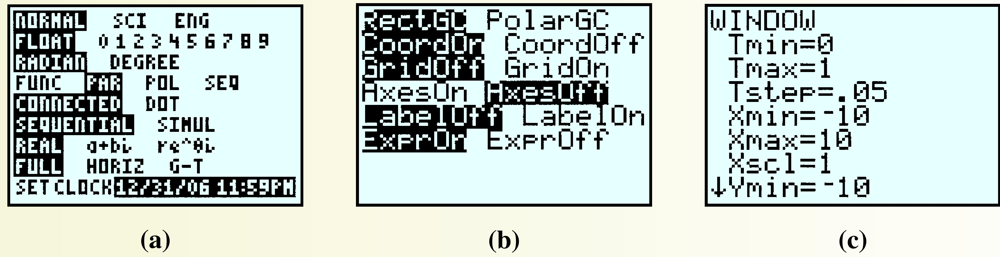
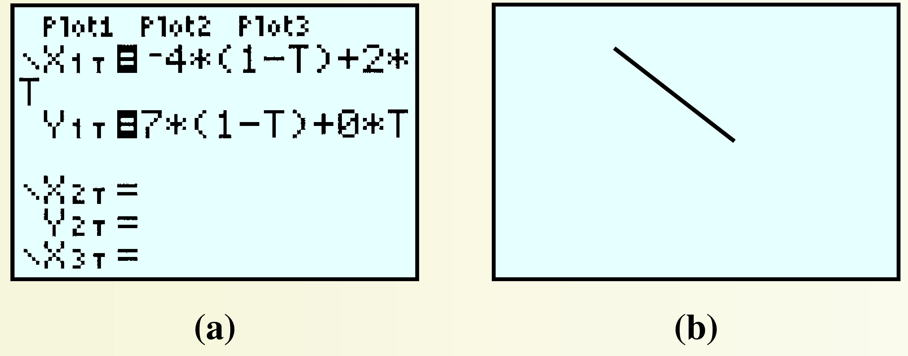
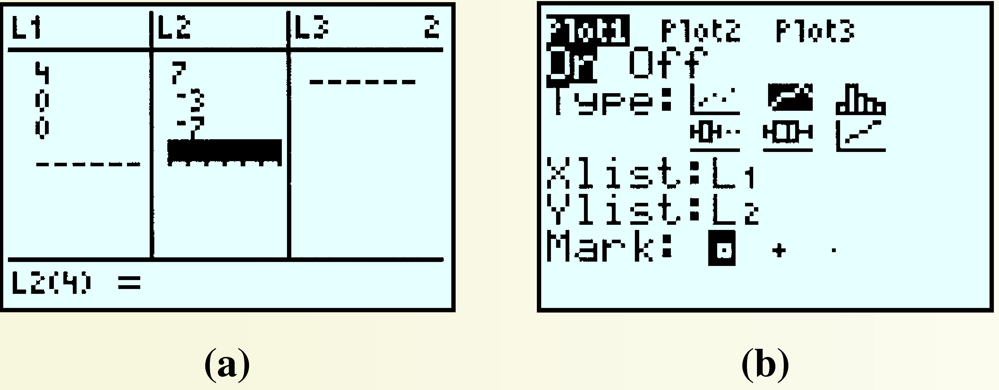

Chapter 7 Polynomial and Rational Functions

The graphs of linear, quadratic, exponential and power functions all have a characteristic shape. But the graphs of polynomials have a huge variety of different shapes.
Ever since Gutenberg's invention of movable type in 1455, artists and printers have been interested in the design of pleasing and practical fonts. In 1525, Albrecht Durer published On the Just Shaping of Letters, which set forth a system of rules for the geometric construction of Roman capitals. The letters shown above are examples of Durer's font. Until the twentieth century, a ruler and compass were the only practical design tools, so straight lines and circular arcs were the only geometric objects that could be accurately reproduced.
With the advent of computers, complex curves and surfaces, such as the smooth contours of modern cars, can be defined precisely. In the 1960s the French automobile engineer Pierre Bézier developed a new design tool based on polynomials. Bézier curves are widely used today in all fields of design, from technical plans and blueprints to the most creative artistic projects. Many computer drawing programs and printer languages use quadratic and cubic Bézier curves.

Investigation 7.1. Bézier Curves.
A Bézier curve is actually a sequence of short curves pieced together. Each piece has two endpoints and (for nonlinear curves) at least one control point. The control points do not lie on the curve itself, but they determine its shape. Two polynomials define the curve, one for the \(x\)-coordinate and one for the \(y\)-coordinate.
-
Linear Bézier Curves
The linear Bézier curve for two endpoints, \((x_1, y_1)\) and \((x_2, y_2)\text{,}\) is the straight line segment joining those two points. The curve is defined by the two functions
\begin{equation*} \begin{aligned}[t] x \amp= f(t) = x_1\cdot (1 - t) + x_2\cdot t \\ y \amp = g(t) = y_1 \cdot (1 - t) + y_2 \cdot t \end{aligned} \end{equation*}for \(0\le t\le 1\text{.}\)
Find the functions \(f\) and \(g\) defining the linear Bézier curve joining the two points \((-4, 7)\) and \((2, 0)\text{.}\) Simplify the formulas defining each function.
-
Fill in the table of values and plot the curve.
\(t\) \(0\) \(0.25\) \(0.5\) \(0.75\) \(1\) \(x\) \(\hphantom{000}\) \(\hphantom{000}\) \(\hphantom{000}\) \(\hphantom{000}\) \(\hphantom{000}\) \(y\) \(\) \(\) \(\) \(\) \(\)

-
Quadratic Bézier Curves: Drawing a Simple Numeral 7
The quadratic Bézier curve is defined by two endpoints, \((x_1, y_1)\) and \((x_3, y_3)\text{,}\) and a control point, \((x_2, y_2)\text{.}\)
\begin{equation*} \begin{aligned}[t] x \amp= f(t)=x_1\cdot(1 - t)^2+2x_2\cdot t (1 - t) + x_3\cdot t^2 \\ y \amp = g(t)= y_1\cdot(1 - t)^2 +2y_2\cdot t (1 - t) + y_3 \cdot t^2 \end{aligned} \end{equation*}for \(0\le t\le 1\text{.}\)
Find the functions \(f\) and \(g\) for the quadratic Bézier curve defined by the endpoints \((-4, 7)\) and \((2, 0)\text{,}\) and the control point \((0, 5)\text{.}\) Simplify the formulas defining each function.
-
Fill in the table of values and plot the curve.
\(t\) \(0\) \(0.25\) \(0.5\) \(0.75\) \(1\) \(x\) \(\hphantom{000}\) \(\hphantom{000}\) \(\hphantom{000}\) \(\hphantom{000}\) \(\hphantom{000}\) \(y\) \(\) \(\) \(\) \(\) \(\) Draw a line segment from \((-4, 7)\) to \((4, 7)\) on the grid above to complete the numeral 7.
We can adjust the curvature of the diagonal stroke of the 7 by moving the control point. Find the functions \(f\) and \(g\) for the quadratic Bézier curve defined by the endpoints \((4, 7)\) and \((0,-7)\text{,}\) and the control point \((0,-3)\text{.}\) Simplify the formulas defining each function.
-
Fill in the table of values and plot the curve.
\(t\) \(0\) \(0.25\) \(0.5\) \(0.75\) \(1\) \(x\) \(\hphantom{000}\) \(\hphantom{000}\) \(\hphantom{000}\) \(\hphantom{000}\) \(\hphantom{000}\) \(y\) \(\) \(\) \(\) \(\) \(\) Draw a line segment from \((-4, 7)\) to \((4, 7)\) on the grid above to complete the numeral 7.
On your graphs in steps B.3 and B.6, plot the three points that defined the curved section of the numeral 7, then connect them in order with line segments. How does the position of the control point change the curve?
-
Cubic Bézier Curves: Drawing a Letter y
A cubic Bézier curve is defined by two endpoints, \((x_1, y_1)\) and \((x_4, y_4)\text{,}\) and two control points, \((x_2, y_2)\) and \((x_3, y_3)\text{.}\)
\begin{equation*} \begin{aligned}[t] x \amp= f(t) = x_1\cdot (1 - t)^2 +3x_2\cdot t(1 - t)^2 +3x_3\cdot t^2(1 - t) + x_4\cdot t^3\\ y \amp = g(t) = y_1\cdot (1 - t)^2 +3y_2\cdot t(1 - t)^2 +3y_3\cdot t^2(1 - t) + y_4 \cdot t^3 \end{aligned} \end{equation*}for \(0\le t \le 1\text{.}\)
Find the functions \(f\) and \(g\) for the cubic Bézier curve defined by the endpoints \((4, 7)\) and \((-4,-5)\text{,}\) and the control points \((3, 3)\) and \((0,-8)\text{.}\) Simplify the formulas defining each function.
-
Fill in the table of values and plot the curve.
\(t\) \(0\) \(0.25\) \(0.5\) \(0.75\) \(1\) \(x\) \(\hphantom{000}\) \(\hphantom{000}\) \(\hphantom{000}\) \(\hphantom{000}\) \(\hphantom{000}\) \(y\) \(\) \(\) \(\) \(\) \(\) Connect the four given points in order using three line segments. How does the position of the control points affect the curve? Finish the letter y by including the linear Bézier curve you drew for step A.2.
Investigation 7.2. Bézier Curves on the Graphing Calculator.
-
We can draw Bézier curves on the graphing calculator using the parametric mode. First, press the MODE key and highlight PAR, as shown in figure (a). To remove the \(x\)- and \(y\)-axes from the display, press 2nd ZOOM to get the \(Format\) menu, then choose \(AxesOff\) as shown in figure (b). Finally, we set the viewing window: Press WINDOW and set
\begin{equation*} \begin{aligned}[t] \text{Tmin} \amp = 0 \amp \text{Tmax} \amp= 1\amp\text{TStep} \amp= 0.05\\ \text{Xmin} \amp = -10 \amp \text{Xmax} \amp= 10 \amp \text{Ymin} \amp = -10 \amp \text{Ymax} \amp= 10 \end{aligned} \end{equation*}as shown in figure (c).
As an example, we will graph the linear curve from part (A). Press Y= and enter the definitions for \(x(t)\) and \(y(t)\text{,}\) as shown below. Press GRAPH and the calculator displays the line segment joining \((-4, 7)\) and \((2, 0)\text{.}\) Experiment by modifying the endpoints to see how the graph changes.
 -
Designing a Numeral 7
Press 2nd Y= and enter the formulas for the quadratic Bézier curve defined by the endpoints \((4, 7)\) and \((0,-7)\text{,}\) and the control point \((0, 5)\) under \(X_{1T}\) and \(Y_{1T}\text{.}\) (These are the same formulas you found in step B.1 of Investigation 7.1.)
Find the functions \(f\) and \(g\) for the linear Bézier curve joining the points \((-4, 7)\) and \((4, 7)\text{.}\) Simplify the formulas for those functions and enter them into your calculator under \(X_{2T}\) and \(Y_{2T}\text{.}\) Press GRAPH to see the graph.
Now we will alter the image slightly: Go back to \(X_{1T}\) and \(Y_{1T}\) and change the control point to \((0,-3)\text{.}\) (These are the formulas you found in step B.4 of Investigation 7.1.) How does the graph change?
-
We can see exactly how the control point affects the graph by connecting the three data points with line segments. Press STAT ENTER and enter the coordinates of \((4, 7)\text{,}\) \((0,-3)\text{,}\) and \((0,-7)\) in \(L_1\) and \(L_2\text{,}\) as shown in figure (a). Press 2nd Y= ENTER, turn on Plot1, and select the second plot type, as shown in figure (b). You should see the line segments superimposed on your numeral 7. How are those segments related to the curve?
 -
Now edit \(L_2\) so that the control point is \((0, 5)\text{,}\) and again define \(X_{1T}\) and \(Y_{1T}\) as in step B.1 to see how the graph is altered. Experiment by using different coordinates for the control point and entering the appropriate new equations in \(X_{1T}\) and \(Y_{1T}\text{.}\) Describe how the point \((x_2, y_2)\) affects the direction of the quadratic Bézier curve.
Hint: Consider the direction of the curve starting off from either endpoint.
-
Designing a Letter y with Cubic Bézier Curves
First, turn off Plot1 by pressing Y= ↑ ENTER.
Enter the formulas for the cubic Bézier curve from part C.1 under \(X_{1T}\) and \(Y_{1T}\text{.}\) Modify the expressions in \(X_{2T}\) and \(Y_{2T}\) to the linear Bézier curve joining the points \((-4, 7)\) and \((2, 0)\) from step A.1 of Investigation 7.1.
How do the control points affect the direction of the Bézier curve? (Suggestion: Enter the coordinates of the four points under \(L_1\) and \(L_2\) and turn Plot1 back on.)
When you finish experimenting with Bézier curves, set the calculator MODE (2nd QUIT) back to FUNC, and reset the FORMAT(2nd ZOOM)to AxesOn.